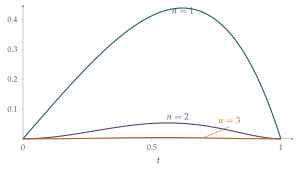

STEP II 2021、第8問
先に進む前に問題を読んでおこう。問題は、OCRが配布している2021年のSTEP問題一式（zipファイル）のSTEP IIに収録されている： www.ocr.org.uk/Images/696588-2021-past-papers.zip
導入
\(e\) をよく近似する分数はどうすれば見つかるだろうか。級数（series）\(1 + 1 + \frac12 + \frac16 + \cdots\) を途中で打ち切るという手もあるが、そうして得られる分数は、分母の大きさの割にはそれほど良い近似ではない。この問題は、はるかに巧妙なことを行う。積分の族を作り、そのどれもが「整数 \(+\) 整数 \(\times\, e\)」の形をした小さな数になるようにするのである。\(a + be\) が非常に小さければ \(e\) は \(-a/b\) にきわめて近く、こうして積分から優れた分数の列 \(\frac{19}{7}\), \(\frac{193}{71}\), \(\frac{2721}{1001}\), …が得られる。
小さいと同時に「対象とする数の整数係数の結合」の形をした積分を使うという同じ手法は、数学における最も深い無理性（irrationality）の証明のいくつかの背後にある。\(e\) が超越数であることのエルミート（Hermite）による証明や、\(\zeta(3)\) が無理数であることのアペリー（Apéry）による証明もその例である。
取りかかる前に
区間 \([0, 1]\) 上の被積分関数（integrand）\(\frac{t^n(1-t)^n}{n!}e^t\) を見てみよう。
\([0, 1]\) 上での \(t(1-t)\) の最大値はいくつか。そこから、\(n\) が大きくなるときの \(T_n\) の大きさについて何がわかるか。
\(t(1-t)\) の最大値は \(t = \frac12\) における \(\frac14\) である。したがって被積分関数は高々 \(\frac{e}{4^n n!}\) であり、これは驚くほど速く小さくなる（図 2.9.1）。この小ささが話の半分である。残りの半分、すなわち \(T_n\) が \(a_n + b_n e\) という特別な形をもつことは、部分積分（integration by parts）から得られる。
順を追って解く
段階 1 2回微分する
\(p(t) = t^n(1-t)^n\) とおく。積の微分法則（product rule）により \[p'(t) = n t^{n-1}(1-t)^n - n t^n(1-t)^{n-1} = n t^{n-1}(1-t)^{n-1}(1 - 2t).\]
もう一度微分せよ。2つの項が現れるので、共通因数 \(n t^{n-2}(1-t)^{n-2}\) をくくり出す。求められている形に合わせるには、\((1 - 2t)^2\) を \(t(1-t)\) を用いて書き直す必要がある。どうすればよいか。
\(n\,[t(1-t)]^{n-1}(1 - 2t)\) を積の微分法則で微分する（\(\frac{\mathrm{d}}{\mathrm{d}t}[t(1-t)] = 1 - 2t\) に注意）： \[\begin{aligned} p''(t) &= n(n-1)[t(1-t)]^{n-2}(1-2t)^2 - 2n[t(1-t)]^{n-1} \\ &= n t^{n-2}(1-t)^{n-2}\Bigl[(n-1)(1-2t)^2 - 2t(1-t)\Bigr]. \end{aligned}\] ここで \((1 - 2t)^2 = 1 - 4t + 4t^2 = 1 - 4t(1-t)\) であるから、括弧の中は \((n-1) - 4(n-1)t(1-t) - 2t(1-t) = (n-1) - 2(2n-1)t(1-t)\) となる。■
段階 2 2回部分積分する
\(p(t)\) は \(t = 0\) でも \(t = 1\) でも \(0\) である。\(n \geq 2\) のとき、\(p'(t)\) はどうか。\(p(t)e^t\) を部分積分するとき、なぜそれが重要なのか。
\(n \geq 2\) のとき、\(p'(t)\) は因数 \(t^{n-1}(1-t)^{n-1}\) を含むので、やはり両端で \(0\) になる。2回部分積分すると、境界項はすべて \(0\) である： \[\int_0^1 p\, e^t\,\mathrm{d}t = \Bigl[p\,e^t\Bigr]_0^1 - \int_0^1 p'\, e^t\,\mathrm{d}t = -\Bigl[p'\,e^t\Bigr]_0^1 + \int_0^1 p''\, e^t\,\mathrm{d}t = \int_0^1 p''\, e^t\,\mathrm{d}t.\] 段階 1 より \(p''(t) = n(n-1)\,t^{n-2}(1-t)^{n-2} - 2n(2n-1)\,t^{n-1}(1-t)^{n-1}\) である。これを \(n!\) で割ると \[\frac{p''(t)}{n!} = \frac{t^{n-2}(1-t)^{n-2}}{(n-2)!} - 2(2n-1)\frac{t^{n-1}(1-t)^{n-1}}{(n-1)!}.\] \(e^t\) を掛けて積分すると、\(T_n = T_{n-2} - 2(2n-1)T_{n-1}\) が得られる。■
段階 3 整数の構造
\(T_0 = \int_0^1 e^t\,\mathrm{d}t = e - 1\) である。\(T_1 = \int_0^1 (t - t^2)e^t\,\mathrm{d}t\) については、部分積分により \(\int_0^1 t e^t\,\mathrm{d}t = 1\)、\(\int_0^1 t^2 e^t\,\mathrm{d}t = e - 2\) となるので、\(T_1 = 1 - (e - 2) = 3 - e\) である。
\(T_0 = -1 + 1 \cdot e\)、\(T_1 = 3 + (-1)\cdot e\) である。なぜすべての \(T_n\) が、整数 \(a_n\), \(b_n\) を用いて \(a_n + b_n e\) の形になるのか。
累積帰納法（strong induction）による。\(T_{n-2} = a_{n-2} + b_{n-2}e\)、\(T_{n-1} = a_{n-1} + b_{n-1}e\) で係数が整数ならば \[T_n = \bigl(a_{n-2} - 2(2n-1)a_{n-1}\bigr) + \bigl(b_{n-2} - 2(2n-1)b_{n-1}\bigr)e,\] であり、新しい係数もまた整数である。■
段階 4 小さいからこそ情報をもつ
\(0 < t < 1\) のとき被積分関数は正であり、\(t^n(1-t)^n \leq 1\) かつ \(e^t < e\) である。したがって \[0 < T_n < \int_0^1 \frac{e}{n!}\,\mathrm{d}t = \frac{e}{n!}.\]
\(0 < a_n + b_n e < \dfrac{e}{n!}\) を \(|b_n|\) で割れ。これは \(e\) と \(-a_n/b_n\) の距離について何を語っているか。
\(|b_n|\) は正の整数であるから \(1\) 以上であり、\(|b_n|\) で割ると \[\left| e - \left(\frac{-a_n}{b_n}\right) \right| = \frac{|a_n + b_n e|}{|b_n|} < \frac{e}{n!\,|b_n|} \leq \frac{e}{n!}.\] 右辺は \(0\) に収束するので、\(-a_n/b_n \to e\) である。■
漸化式（recurrence）から計算した最初のいくつかを示す：
| \(n\) | 2 | 3 | 4 | 5 | 6 |
|---|---|---|---|---|---|
| \(-a_n/b_n\) | \(\dfrac{19}{7}\) | \(\dfrac{193}{71}\) | \(\dfrac{2721}{1001}\) | \(\dfrac{49171}{18089}\) | \(\dfrac{1084483}{398959}\) |
| 誤差 | \(4 \times 10^{-3}\) | \(3 \times 10^{-5}\) | \(1 \times 10^{-7}\) | \(3 \times 10^{-10}\) | \(5 \times 10^{-13}\) |
分数 \(\frac{2721}{1001}\) は、分母がわずか4桁であるにもかかわらず、小数第 \(6\) 位まで正しい。

振り返り
漸化式を生み出す装置としての部分積分。 多項式とその導関数が両端で \(0\) になったので、部分積分によって境界項のないすっきりした漸化式が得られた。
構造と大きさを組み合わせる。 漸化式によって \(T_n\) が \(a_n + b_n e\) の形であることがわかり、評価によってそれが小さいことがわかった。どちらか一方だけでは、\(e\) の近似について何も言えない。
必要のないものは計算しない。 問題は \(a_n\) と \(b_n\) を求めなくてよいと述べており、実際に議論の中でそれらの値は一度も必要にならなかった。必要だったのは、それらが整数であるということだけである。
背後にある数学
この問題は、ある有名な定理のすぐ手前で止まっている。\(p, q\) を正の整数として \(e = p/q\) と仮定する。すると \[q\,T_n = q a_n + b_n p\] は整数である。ところが \(0 < q\,T_n < \dfrac{qe}{n!}\) であり、\(n\) が大きければ右辺は \(1\) より小さい。すると \(q T_n\) は \(0\) と \(1\) の間に厳密に挟まれた整数ということになり、これは不可能である。よって \(e\) は無理数（irrational number）である。これは 第 1.4 節 で見た「整数を \(0\) と \(1\) の間に閉じ込める」という考え方を、級数の代わりに積分で実現したものである。\(t^n(1-t)^n\) のような多項式を含む、まさにこの種の積分を用いて、シャルル・エルミートは1873年に \(e\) が超越数（transcendental number）であること、すなわち整数係数のどんな多項式の根にもならないことを証明した。
連分数
表の分数は単に良い近似であるだけではない。それらは最良の近似の一部なのである。オイラー（Euler）が発見した \(e\) の連分数（continued fraction）展開には、美しい規則性がある： \[e = [2; 1, 2, 1, 1, 4, 1, 1, 6, 1, 1, 8, \ldots],\] そしてその近似分数（convergent）は \(2, 3, \frac83, \frac{11}{4}, \frac{19}{7}, \frac{87}{32}, \frac{106}{39}, \frac{193}{71}, \ldots, \frac{2721}{1001}, \ldots\) である。私たちの \(-a_n/b_n\) は、ちょうど3つおきの近似分数になっている。これより小さい分母をもつ分数で、\(e\) にこれ以上近いものは存在しない。オイラーが見出したこの規則性そのものが、\(e\) が無理数であることの最初の証明であった。有限の連分数をもつのは有理数だけだからである。
アペリーの奇跡
1978年、ロジェ・アペリー（Roger Apéry）は、オイラー以来未解決であった問題（第 2.3 節 を参照）、すなわち \(\zeta(3) = 1 + \frac18 + \frac1{27} + \cdots\) が無理数であることの証明を発表した。その証明はあまりに意外なものであったため、聴衆は当初それを信じなかった。1年後、Frits Beukers は次の形の積分を用いた短い証明を見つけた： \[\int_0^1\!\!\int_0^1 \frac{-\ln(xy)}{1 - xy}\, P_n(x) P_n(y)\,\mathrm{d}x\,\mathrm{d}y,\] ここで \(P_n\) は \(\frac{\mathrm{d}^n}{\mathrm{d}x^n}\bigl(x^n(1-x)^n\bigr)\) から作られる。これらの積分は小さく、正であり、「整数 \(+\) 整数 \(\times\, \zeta(3)\)」を制御された分母で割った形をしている。まさにこの問題と同じ戦略である。\(\zeta(5)\) や \(e + \pi\) が無理数かどうかは、いまだにわかっていない。
思考のスキル
ある量がいくつかの数の整数係数の結合であることがわかっており、しかも小さいがゼロではないこともわかっているならば、その量は情報をもっている。近似についての情報であり、ときには無理性についての情報でもある。
この型は「構造は代数から、大きさは解析から」とまとめられる。これは数論の至るところに現れ、解析と代数が最も実り豊かに出会う場面の一つである。
次の一歩
漸化式を回してみる。 \(n = 2, 3, 4\) について漸化式から \(a_n\) と \(b_n\) を計算し、表の分数を確かめよ。\(b_n\) の符号が交互に変わることを示せ。
より鋭い評価。 \(0 < T_n < \dfrac{e}{4^n\, n!}\) を示せ。これによって \(-a_n/b_n\) の誤差評価はどれだけ改善されるか。
無理性の証明。 上の囲みの議論を丁寧に書き下せ。\(T_n > 0\) であることは、正確にはどこで使われているか。
別の重み。 発展 \(e^t\) を \(e^{2t}\) に置き換えて（すなわち \(U_n = \int_0^1 \frac{t^n(1-t)^n}{n!}e^{2t}\,\mathrm{d}t\) として）問題をやり直せ。\(U_n\) の漸化式を求め、\(U_n\) が \(1\) と \(e^2\) の有理数係数の結合であることを示し、この議論で \(e^2\) が無理数であることがなお証明できるかどうかを調べよ。（第 1.4 節 と比較せよ。）
さらに学ぶために
Ivan Niven, Irrational Numbers (Mathematical Association of America)。無理性の証明についての古典的な小著で、エルミートの方法も扱っている。
Alfred van der Poorten, 「A proof that Euler missed」, The Mathematical Intelligencer 1 (1979)。アペリーの証明とその受け止められ方を生き生きと描いた記事。
Julian Havil, The Irrationals (Princeton University Press)。数学に関心のある一般読者向けに書かれた無理数の歴史。